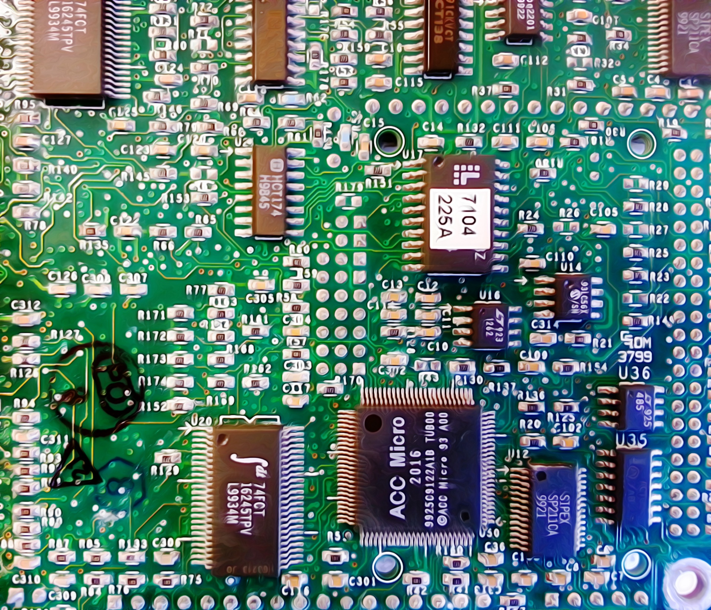
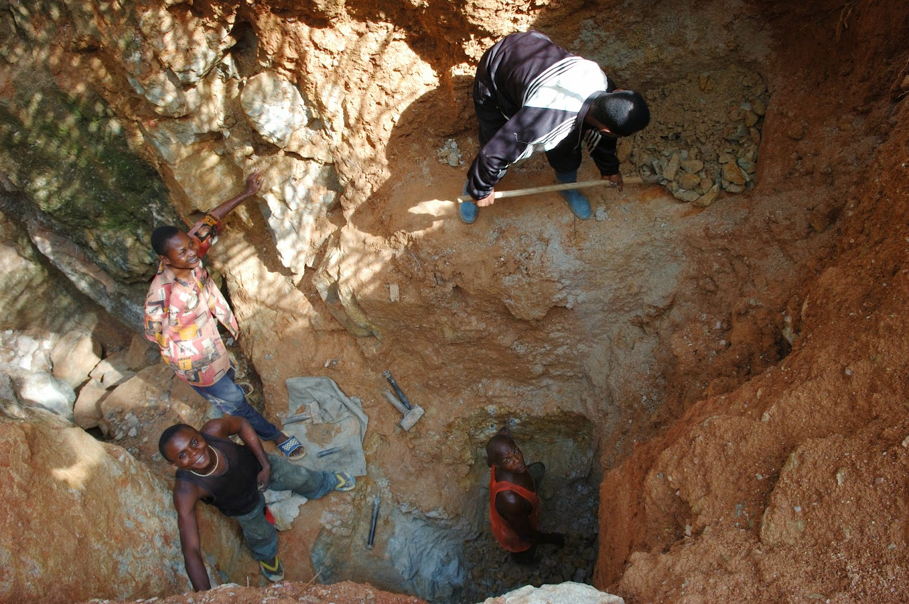
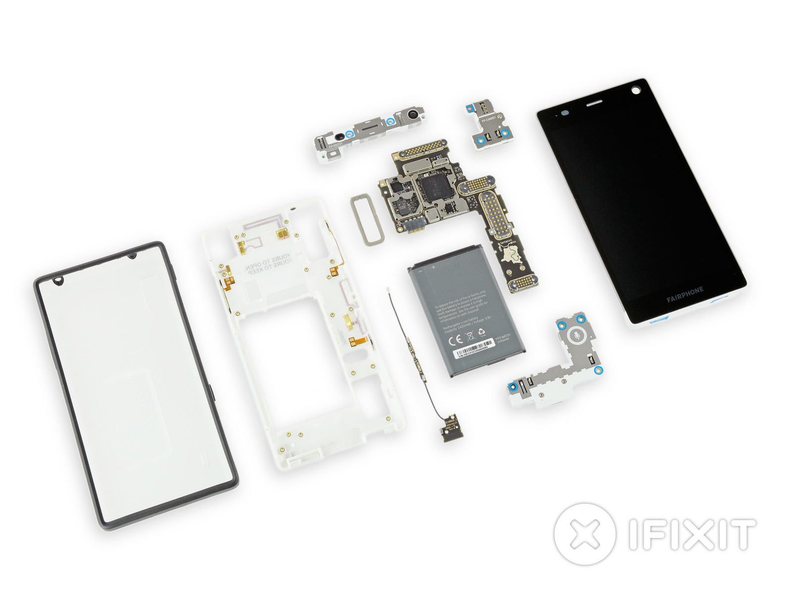
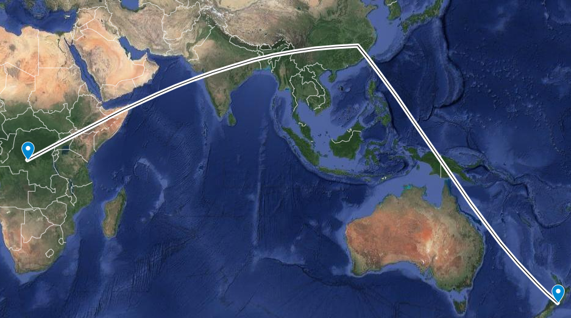
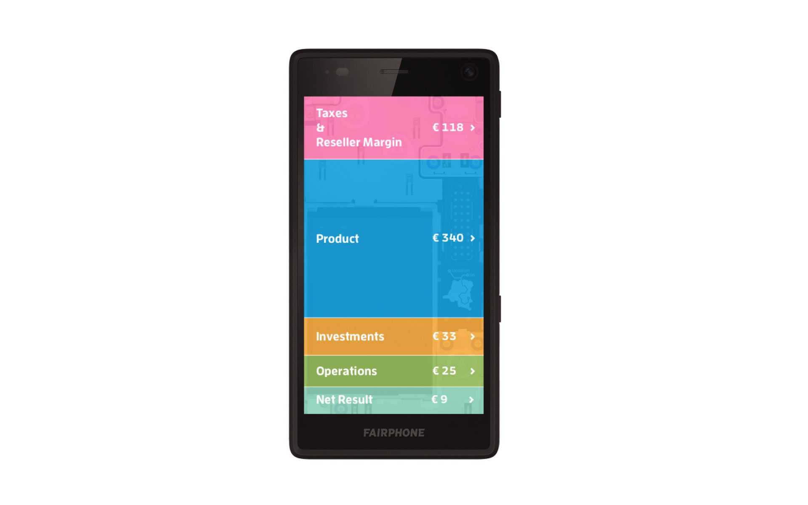
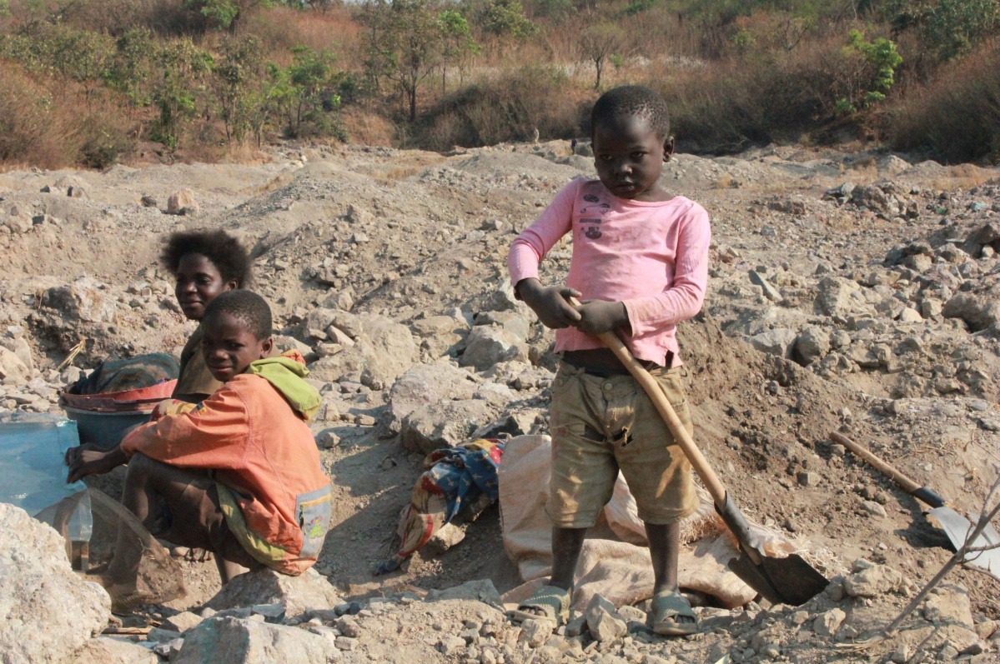

Introduction
You’re probably reading this on a screen. And if you’re not you probably printed it out on a printer. Your phone is probably close by as well. Every single one of those devices most likely violate at least one human right, if not more.
Welcome to the Democratic Republic of Congo.

What does the word artisanal bring to mind? Maybe cool keycaps? (r/mk) Nice cheeses? How about long hours or bad working conditions?
In the Democratic Republic of Congo artisanal mines are mines run by groups other than the government - either by local people or by organisations that span all of the DRC. Artisanal mines often have unqualified workers and inadequate tools. These mines mine coltan - a conflict material.

Conflict material?
But what are conflict materials? Conflict minerals are minerals, metals or resources that “are mined in conditions of armed conflict or human rights abuses”[1] Some conflict materials include coltan from which we get tantalum and niobium, wolframite from which we get tungsten (Wolfram is German for tungsten), gold and cassiterite from which we get tin.
Armed Conflict?
But what is this armed conflict? In the DRC the government (the military) and FDLR (Democratic Forces for the Liberation of Rwanda, militia) are fighting for control of the mines among other things because the mines can make people a lot of money.
But what happens in these mines? The workers in these mines not only have to use low quality tools they also have to climb dangerously into the mines using only their hands and feet and a rope, a rope that sometimes snaps and the miners fall all the way to the bottom, 30m down (Violating Human Rights articles 3, 5 and 25).
Children as young as six work, handling poisonous coltan ore without any of the proper equipment and protection for their lungs. Many people die in the mines, the DRC’s UN run radio station reported that 44 people died in 2014-2015 alone (Article 3). Workers in Kapata have been found to be working up to 80 hours a week[2], far too much (Article 24).
Things are better now though right?
You would think that by this point things were better right? Not quite… Before these issues were brought to light by Amnesty international and other Human Rights Organisations, corruption in artisanal mines was rife.
Now a few different efforts have popped up to combat these issues. The first one is resource tracking which attempts to tracking the path of a particular set of minerals right to the device. The second effort comes from a different end of the supply chain, by trying to create a phone that only sources its materials from reputable sources known to not use child labour, make its workers work excessively long hours and have dangerous working conditions.

Resource Tracking
Let’s start with resource tracking. Information is scarce around this topic suggesting that it is difficult to infiltrate the supply chain. The largest effort into tracking cobalt comes from Amnesty international and Afrewatch which through interviewing many miners, identifying shipment route from the miner's intermediaries and scouring smelting companies. Whether or whether not child labour was used in the mining of ores is not recorded so buying companies do not know if the ore they’re buying violates human rights though Amnesty International suspects they have a pretty good idea. But of course CDM (Congo Dongfang International Mining SARL) doesn’t do any due diligence on this anyway.
Once CDM buys the material, semi-refines it and ships it off to China it is sold to technology businesses, mainly manufactures of lithium-ion batteries because they contain tantalum. These batteries are then placed in phones, tablets, computers and cars and shipped off to you.

What about phone manufacturers?
What about phone manufacturers? What can they do? This is where Fairphone and similar projects come in. The Fairphone company makes sure it sources its material from suppliers in compliance with the Dodd-Frank Act so that all the materials in the the fairphone are human rights violation free. The Fairphone company also made sure that their phone was recyclable (Apple did this as well with their robot Liam[3]) and you can also replace that parts in it in case one of the parts break or you need an upgrade.

Conclusion
As you can see there are many issues relating to electronics and the way they are made but slowly and surely we are addressing these issues through the efforts of Amnesty International, Fairphone, Apple and others.
I think that currently the best way to avoid products tainted with human rights issues is to carefully research before you buy and to encourage companies to make sure they source their materials responsibly.


{kind=link}
{kind=link}
{kind=link}
{kind=link}
{kind=link}
{kind=link}